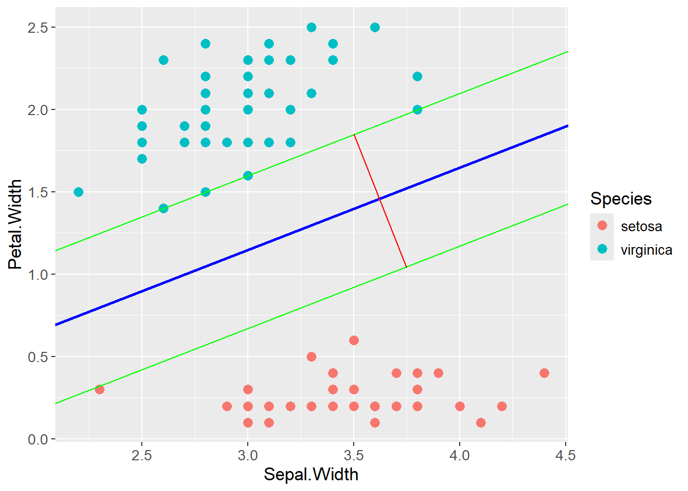

Show the code
set.seed(1337)
library("tidymodels")
tidymodels::tidymodels_prefer()Set seed and load packages.
set.seed(1337)
library("tidymodels")
tidymodels::tidymodels_prefer()Load data.
data("iris")
iris <- iris |>
tibble::as_tibble()The previously introduced Logistic Regression works through probabilities whereas Support Vector Machines (SVMs) have a different approach. If two classes are linearly separable, a linear boundary can be placed between them. The boundary is placed in the middle between the classes and the distance between the boundary and the classes is maximized, called the margin. SVMs are different from an ordinary separating hyperplane in that it allows for some misclassification, which is called a soft margin.
The models previously introduced are all linear models, i.e. they find a linear boundary between classes to make classifiers. Cases where data is not linearly separable then becomes a problem, as the models performs suboptimally. In its own right, SVMs are linear models, but by applying data transformations, the model can find a non-linear boundary between classes which is achieved through the Kernel Trick introduced later.
For exemplifying, the iris data is once again used where the two below classes are perfectly linearly separable. SVM finds a line in the exact middle of the two classes such that the margin is maximized. The margin is the distance between the boundary and the nearest observation in each class. The observations on the margin and within (introduced later) the margin are called support vectors. Below, the blue line is the optimal separating hyperplane (OSH), the green lines are parallel to the OSH but placed on top of the support vectors. The distance between the green lines, indicated by the red line, is the margin. By maximizing that margin, SVM finds the optimal boundary between the classes.
iris |>
filter(Species != "versicolor") |>
ggplot(aes(x = Sepal.Width,
y = Petal.Width,
color = Species)) +
geom_point() +
geom_abline(intercept = 0.1,
slope = 0.5,
color = "green") +
geom_abline(intercept = -0.35,
slope = 0.5,
color = "blue") +
geom_abline(intercept = -0.83,
slope = 0.5,
color = "green") +
geom_segment(aes(x = 3.5,
y = 1.85,
xend = 3.75,
yend = 1.04),
color = "red")
A linear function is often described as \(y = ax + b\) where \(a\) is the slope and \(b\) is the intercept. A more versatile form of the linear function is:
\[ y = -\frac{A}{B}x - \frac{C}{B} \rightarrow Ax + By + C = 0 \]
As can be seen, \(a = -\frac{A}{B}\) and \(b = -\frac{C}{B}\). \(A\) is the slope, \(C\) is the intercept and \(B\) is a scaling factor. The equation \(Ax + By + C = 0\) is the equation for a hyperplane, here in two dimensions. This form can be rewritten into a matrix form which is more used in the field:
\[ Ax + By + C = 0 \rightarrow \begin{bmatrix} A & B \end{bmatrix} \begin{bmatrix} x \\ y \end{bmatrix} + C = 0 \\ \rightarrow w^Tx + b = 0 \]
The distance between two parallel lines is calculated as:
\[ d = \frac{|C_2 - C_1|}{\sqrt{A^2 + B^2}} \]
Two tricks are then applied to the equation. First, the two parallel lines making up the margin (green in the plot above), are expressed by \(w^Tx + b = 1\) and \(w^Tx + b = -1\), respectively. 1 and -1 is used as the classes are either 1 or -1. Also, the absolute difference between the two lines is then 2, which is why the margin can be calculated as \(d = \frac{2}{\sqrt{A^2 + B^2}}\). Second, \(w\) is a vector of the coefficients \(A\) and \(B\), and \(\sqrt{A^2 + B^2}\) is the length of a vector spanned by \(A\) and \(B\), i.e. the length of \(w\). The margin is then calculated as \(d = \frac{2}{||w||}\). The distance can now be expressed without the use of the coefficients \(A\), \(B\) and \(C\).
Given the above, constrains are put on the model to ensure observations are correctly classified. The constrains are as follows:
\[ w^Tx_i - b \geq 1, \text{ if } y_i = 1 \\ w^Tx_i - b \leq -1, \text{ if } y_i = -1 \]
By multiplying the expression with \(y_i\), the two expressions can be gathered into one:
\[ y_i(w^Tx_i - b) \geq 1 \]
As stated in the introduction, the goal is to maximize the margin, i.e. the distance between the two green lines. The margin is calculated as \(d = \frac{2}{||w||}\), and the goal is to maximize \(d\) which is the same as minimizing \(||w||\). The optimization problem subject to the constraints can then be formulated as:
\[ \min_{w,b}||w||^2 \\ \text{ subject to } \\ y_i(w^Tx_i - b) \geq 1, \;\; \forall i \]
The above formulation allows for no misclassifications, i.e a hard margin. The SVM has a soft margin and do allow for misclassifications. A new value \(\xi\) is introduced. It is a vector with a value for each observation, indicating how far the observation can be from the correct side of the margin. Further, \(\lambda\) is introduced as a penalty for misclassifications, similar to regularization for OLS. The final optimization problem for the SVM can then be formulated as:
\[ \min_{w,b,\xi}||w||^2 + \lambda\sum_{i=1}^{n}\xi_i \\ \text{ subject to } \\ y_i(w^Tx_i - b) \geq 1 - \xi_i, \;\; \forall i \\ \xi_i \geq 0, \;\; \forall i \]
If \(\lambda\) is small, the model allows for more misclassifications as the term \(\lambda\sum_{i=1}^{n}\xi_i\) is small compared to \(||w||^2\). The opposite is seen if \(\lambda\) is large. The optimal value for \(\lambda\) is found through cross-validation.
Cases where data is not linearly separable with an acceptable classification error could arise. The plot below is an example of such a case:
test_data <- tibble::tibble(class = c(rep("Sick", 4),
rep("Healthy", 5),
rep("Sick", 4)),
value = c(3, 7, 11, 17,
25, 26, 27, 31, 32,
41, 43, 53, 55))
test_data |>
ggplot(aes(x = value,
y = 0,
color = class)) +
geom_point(size = 3)The data can be transformed by adding a new dimension, e.g. the square of the original value. The data is then linearly separable:
test_data |>
ggplot(aes(x = value,
y = value^2,
color = class)) +
geom_point(size = 3) +
geom_abline(intercept = -850,
slope = 61,
color = "blue")Applying a transformation of this type is computationally expensive, especially with large data sets. A trick can be applied through kernels, hence The Kernel Trick, by exploiting dot products and thereby reduce the computational cost.
An example of a kernel is the polynomial kernel:
\[ K(x,y) = \phi(x)^T \phi(y) = (c + x^Ty)^d \]
Where \(K(x,y)\) is a vector of transformed values for each observation in \(x\) and \(y\), \(\phi\) is a feature mapping, \(d\) is the degree of the polynomial and \(c\) is a hyperparameter. \(c\) has a regularizing effect where larger values reduces the effect of \(x^Ty\).
The idea is, that instead of transforming \(x\) and \(y\) with \(\phi\) and then calculating the dot product, the dot product can be calculated directly on the input space. This saves computational power as \(\phi\) maps the data into a higher dimension, which is computationally expensive. The mathematical benefit of the Kernel Trick is exemplified below where \(c = 1\) for simplicity. The feature mapping \(\phi\) needed to transform the data can be found by expanding the polynomial kernel:
\[ K(x,y) = (1 + x^Ty)^2 = (1 + x_1y_1 + x_2y_2)^2 \rightarrow\\ K(x,y) = 1 + 2x_1y_1 + 2x_2y_2 + 2x_1y_1x_2y_2 + x_1^2y_1^2 + x_2^2y_2^2 \]
To get the above expanded expression by the dot product \(\phi(x)^T \phi(y)\), the feature mapping \(\phi\) is:
\[ K(x,y) = (1 + \sqrt{2}x_1 + \sqrt{2}x_2 + \sqrt{2}x_1x_2 + x_1^2 + x_2^2) (1 + \sqrt{2}y_1 + \sqrt{2}y_2 + \sqrt{2}y_1y_2 + y_1^2 + y_2^2)^T \]
So the feature mapping \(\phi\) is:
\[ \phi(x)^T = (1 + \sqrt{2}x_1 + \sqrt{2}x_2 + \sqrt{2}x_1x_2 + x_1^2 + x_2^2)\\ \phi(y) = (1 + \sqrt{2}y_1 + \sqrt{2}y_2 + \sqrt{2}y_1y_2 + y_1^2 + y_2^2) \]
Ultimately, the Kernel Trick allows for calculating the dot product in the input \((x^Ty)\) space without transforming the data into a higher dimension, here six dimensions and then calculating the dot product.